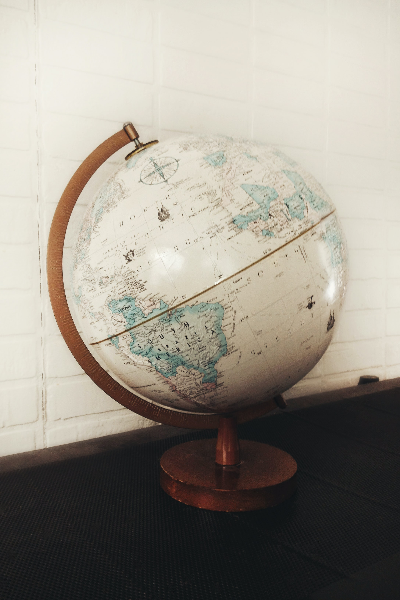

Puntos cardinalesüìç
¿Qué son los puntos cardinales y para qué sirven?Definición de puntos cardinales
Los puntos cardinales son puntos de orientación o sentidos de un mapa que utilizamos para situarnos. Los puntos cardinales se relacionan con el movimiento del sol en el cielo. Los puntos cardinales son 4. El Este (E), donde el sol se esconde; El Oeste (O), donde el sol sale al amanecer, por ende es el lado opuesto del Este. Después están el Norte (N) y el Sur (S), que son dos puntos opuestos que reflejan el eje de rotación terrestres.

Abscisas y ordenadas
A la línea Este-Oeste se le denomina la como el eje de las abscisas y a la línea Norte-Sur, el eje de las ordenadas.

Matemáticas en los puntos cardinales
La composición de estos 4 puntos generan ángulos de 90°. Las bisectrices (los puntos exactos en medio de punto A y punto B) de los puntos cardinales son: Noreste, NE; punto en medio del Norte y el Este, y así respectivamente con el Sudeste (SE), Noroeste (NO) y Sudoeste (SO).
